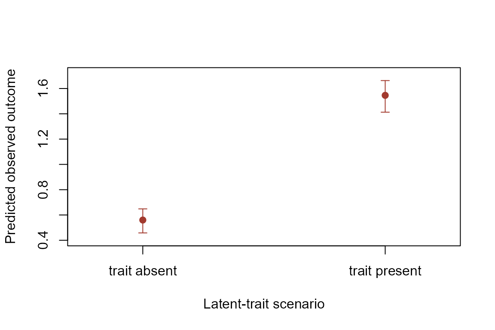

The sensitive trait in a crosswise survey is latent: we observe
crosswise and anchor responses, not each respondent’s trait status.
cmreg() and cmreg_p() fit likelihood-based
models that account for this measurement structure.
cmreg() models the probability of possessing the
sensitive trait as a function of covariates. The formula contains the
primary crosswise response on the left; supply the anchor response
separately.
outcome_fit <- cmreg(
Y ~ female + age,
anchor = A, p = 0.10, p.prime = 0.15,
data = cmdata2, n.start = 1L
)
summary(outcome_fit)
#> Coefficients:
#> Estimate Std. Error z score Pr(>|z|)
#> (Intercept) -1.6501 0.4266 -3.8684 0.0001
#> female 0.2813 0.1427 1.9717 0.0486
#> age 0.0326 0.0133 2.4505 0.0143
#>
#> Auxiliary coefficients:
#> Estimate Std. Error z score Pr(>|z|)
#> (Intercept) 0.1405 1.1363 0.1237 0.9016
#> female -0.2059 0.4121 -0.4995 0.6174
#> age 0.0594 0.0394 1.5074 0.1317The first coefficient block describes the latent trait. The auxiliary block describes the probability of attentive responding. Predict trait prevalence at specific covariate combinations with uncertainty from a parametric bootstrap.
trait_predictions <- cmpredict(
outcome_fit,
newdata = data.frame(female = c(0, 1), age = c(30, 30)),
nsim = 300, seed = 20260825
)
trait_predictions
#> estimate conf.low conf.high
#> 1 0.3381928 0.3046601 0.3790037
#> 2 0.4037005 0.3565547 0.4515935The plot shows the estimated prevalence and its 95% parametric-bootstrap interval for each covariate scenario.
trait_labels <- c("Female = 0", "Female = 1")
plot(
seq_len(nrow(trait_predictions)), trait_predictions$estimate,
ylim = c(0, 1), xlim = c(0.75, 2.25), xaxt = "n",
xlab = "Covariate scenario", ylab = "Predicted trait prevalence",
pch = 19, col = "#1B6CA8"
)
axis(1, at = seq_along(trait_labels), labels = trait_labels)
arrows(
x0 = seq_len(nrow(trait_predictions)), y0 = trait_predictions$conf.low,
x1 = seq_len(nrow(trait_predictions)), y1 = trait_predictions$conf.high,
angle = 90, code = 3, length = 0.05, col = "#1B6CA8"
)cmreg_p() models a continuous observed outcome while
treating the sensitive trait as a latent predictor. The formula now
contains the observed outcome; the crosswise and anchor responses are
supplied by name.
predictor_fit <- cmreg_p(
V ~ age + female,
crosswise = Y, anchor = A, p = 0.10, p.prime = 0.15,
data = cmdata3, n.start = 1L
)
summary(predictor_fit)
#> Coefficients:
#> Estimate Std. Error Z score Pr(>|z|)
#> (Intercept) 0.0236 0.1478 0.1595 0.8733
#> age 0.0096 0.0048 2.0054 0.0449
#> female 0.2473 0.0520 4.7517 0.0000
#> Y 0.9859 0.0756 13.0368 0.0000
#>
#> Auxiliary coefficients:
#> Estimate Std. Error Z score Pr(>|z|)
#> (Intercept) -1.7342 0.4010 -4.3253 0.0000
#> age 0.0352 0.0126 2.7948 0.0052
#> female 0.2880 0.1356 2.1235 0.0337
#>
#> Additional auxiliary coefficients:
#> Estimate Std. Error Z score Pr(>|z|)
#> (Intercept) 0.2468 1.0680 0.2311 0.8172
#> age 0.0548 0.0370 1.4821 0.1383
#> female -0.1076 0.3779 -0.2849 0.7758
#> sigma 1.0438 0.0206 50.7779 0.0000Predictions are returned for both latent-trait states. Each supplied covariate scenario therefore produces an “absent” and a “present” row.
outcome_predictions <- cmpredict_p(
predictor_fit,
newdata = data.frame(age = 30, female = 1),
nsim = 300, seed = 20260825
)
outcome_predictions
#> estimate conf.low conf.high
#> 1: trait absent 0.5600254 0.4581331 0.6481188
#> 1: trait present 1.5459544 1.4128550 1.6627413This plot compares the model-implied observed outcome when the latent trait is absent versus present, with 95% parametric-bootstrap intervals.
state_labels <- sub("^[0-9]+: ", "", rownames(outcome_predictions))
ylim <- range(outcome_predictions$conf.low, outcome_predictions$conf.high)
plot(
seq_len(nrow(outcome_predictions)), outcome_predictions$estimate,
ylim = ylim + c(-0.05, 0.05), xlim = c(0.75, 2.25), xaxt = "n",
xlab = "Latent-trait scenario", ylab = "Predicted observed outcome",
pch = 19, col = "#A23A2E"
)
axis(1, at = seq_along(state_labels), labels = state_labels)
arrows(
x0 = seq_len(nrow(outcome_predictions)), y0 = outcome_predictions$conf.low,
x1 = seq_len(nrow(outcome_predictions)), y1 = outcome_predictions$conf.high,
angle = 90, code = 3, length = 0.05, col = "#A23A2E"
)
The uncertainty intervals reflect sampling uncertainty in the fitted parameters. They do not turn an individual respondent’s latent trait into an observed value; instead, they compare model-implied outcomes under the two trait scenarios.